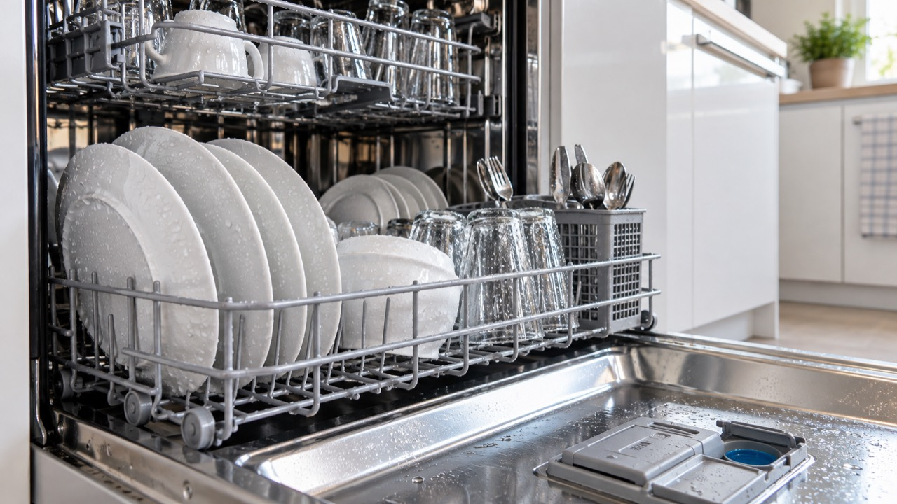

식기세척기 사용 후 그릇에 물기가 남는다면 고장보다 코스 선택, 린스 부족, 식기 배치, 플라스틱 재질의 영향이 흔합니다. 먼저 건조 옵션과 자동 문열림 설정을 확인하고 물이 고이지 않도록 그릇 각도를 바꿔 보세요.
일반 주방세제를 넣으면 과다 거품과 누수의 원인이 될 수 있으므로 식기세척기 전용 세제를 사용하세요. 열에 약한 플라스틱은 고온 건조 전에 식기 표시를 확인합니다.
건조 옵션이 선택됐는데도 히터·송풍이 전혀 작동하지 않거나 오류 코드, 탄 냄새, 비정상 소음이 동반되면 전원을 끄고 제조사에 문의하세요. 냄새가 문제라면 식기세척기 냄새 해결 글도 확인하세요.
LG전자 식기세척기 FAQ는 식기 재질과 건조 성능 차이를 안내합니다.